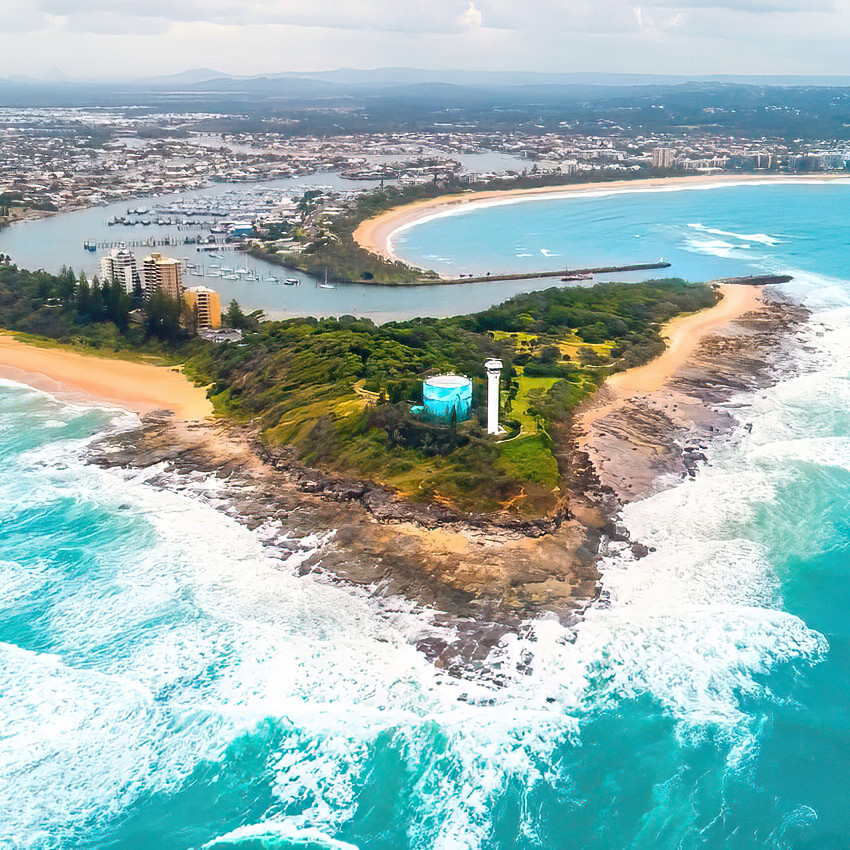

The reference design starts here
Colors, typography & assets
This is the foundation review board, not the homepage layout. These fonts and colors were identified in the original website’s source. The homepage sections will follow after your review.
Global palette
Brand blue
#0190D6
Deep navy / text
#031B35
Dark navy
#04162C
Light blue
#EAF2F5
Inter extra bold
Inter Regular for body text. Clear, readable paragraphs with generous line spacing.
Inter Semi Bold for navigation and buttons.
Better Times for a personal touch
Quick, Easy & Free
Get your free quote
A typography and color sample using the shared theme.
Button style sampleReference imagery
